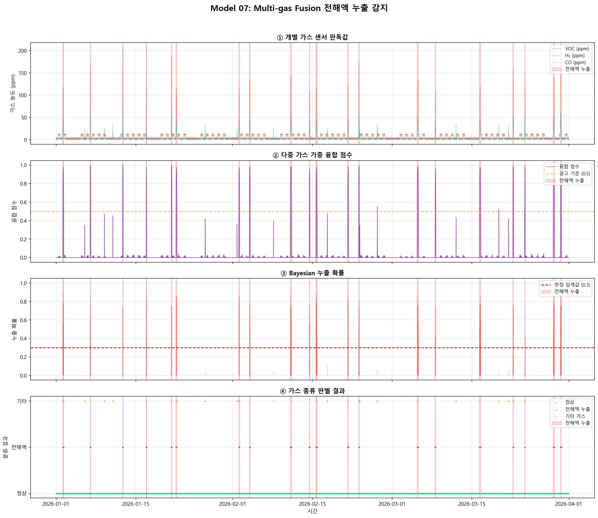

사전 확률(Prior) 설정
P(누출) = 0.02 (2%). 일반적으로 누출이 드문 이벤트임을 반영합니다.
SHREDDER AI MODEL #07
Multi-gas Fusion 전해액 누출 감지
VOC, H₂, CO 다중 가스 센서 융합 — Bayesian 추론 기반 전해액 누출 판정
0 Multi-gas Fusion이란?
Multi-gas Fusion(다중 가스 융합)은 여러 종류의 가스 센서에서 동시에 수집한 데이터를 하나의 통합된 판단으로 결합하는 센서 융합(Sensor Fusion) 기법입니다.
Multi-gas Fusion의 핵심 원리
P(누출) = Bayesian( w₁·SVOC + w₂·SH2 + w₃·SCO )
누출 확률 = 베이지안 갱신( 가중치 × 개별 가스 점수의 합 )
비유: 의사의 종합 진단
혈압만 높다고 바로 입원하지 않습니다. 혈당, 심전도, 혈액검사를 종합해서 판단합니다.
마찬가지로, VOC 하나만 높다고 전해액 누출이라 단정하지 않고 — H₂, CO까지 함께 보고 최종 판단합니다.
왜 단일 가스 센서로는 부족한가?
- VOC만 측정하면: 도장 작업, 세척제 등으로 오경보 발생
- CO만 측정하면: 용접, 엔진 배기가스와 구분 불가
- H₂만 측정하면: 배터리 충전 시에도 미량 발생 → 혼동
- 3가지를 함께 보면: 전해액 특유의 가스 패턴(VOC 급등 + H₂ 증가 + CO 소폭 상승)을 정확히 식별 가능
3종
가스 센서 (VOC, H₂, CO)
F1 0.853
감지 성능 (Precision 96.2%)
84.4%
가스 종류 판별 정확도
1 전해액 누출 시 가스 특성
리튬이온 배터리의 전해액은 주로 에틸렌카보네이트(EC), 디메틸카보네이트(DMC) 등의 유기 용매와 LiPF₆ 리튬염으로 구성됩니다. 누출 또는 열분해 시 특징적인 가스 조합이 발생합니다.
| 가스 | 정상 범위 | 전해액 누출 시 | 특성 |
|---|---|---|---|
| VOC | 10~50 ppm | 80~300+ ppm | 전해액 용매 증발의 주요 지표. EC, DMC 분해산물 |
| H₂ | 0~5 ppm | 10~50+ ppm | 전해액-리튬 반응 부산물. SEI 층 분해 시 발생 |
| CO | 0~10 ppm | 15~40 ppm | 유기 용매 불완전 연소. 단독으로는 판별력 낮음 |
전해액 가스 시그니처 (Signature)
전해액 누출의 핵심 패턴: VOC가 주도적으로 급등하고, H₂가 함께 증가하며, CO는 소폭 상승합니다.
이 비율 패턴(VOC:H₂:CO ≈ 65:25:10)이 전해액을 다른 가스 원인과 구별하는 열쇠입니다.
전해액 누출 패턴
- VOC: 급등 (정상의 3~10배)
- H₂: 상승 (정상의 2~5배)
- CO: 소폭 증가 (1.5~3배)
- 패턴: VOC 주도 + H₂ 동반
기타 원인 패턴
- 용접: CO만 급등, VOC/H₂ 정상
- 도장: VOC만 상승, H₂/CO 정상
- 배터리 충전: H₂ 미량, VOC/CO 정상
- 패턴: 단일 가스 편중
2 개별 가스 분석 — 임계값 기반 감지
Multi-gas Fusion의 첫 단계는 각 가스 센서를 개별적으로 평가하는 것입니다. 3단계 임계값(정상/경고/위험)을 통해 0~1 사이의 이상 점수를 산출합니다.
| 가스 | 정상 (≤) | 경고 (≤) | 위험 (>) | 가중치 |
|---|---|---|---|---|
| VOC | 12 ppm | 30 ppm | 60 ppm | 0.50 |
| H₂ | 3 ppm | 10 ppm | 25 ppm | 0.30 |
| CO | 5 ppm | 12 ppm | 25 ppm | 0.20 |
개별 점수 산출 로직
# 개별 가스 이상 점수 (0 ~ 1)
def individual_score(value, normal, warning, critical):
if value <= normal:
return 0.0 # 정상 범위
elif value <= warning:
return (value - normal) / (warning - normal) * 0.5
elif value <= critical:
return 0.5 + (value - warning) / (critical - warning) * 0.4
else:
return min(0.9 + (value - critical) / critical * 0.1, 1.0)
점수 해석
- 0.0: 완전 정상 — 임계값 이내
- 0.0~0.5: 주의 — 정상 초과, 경고 이내
- 0.5~0.9: 경고 — 경고 초과, 위험 이내
- 0.9~1.0: 위험 — 위험 임계값 초과
3 다중 가스 융합 — 가중 결합 + Bayesian 갱신
개별 점수를 구한 후, 두 단계의 융합을 수행합니다: (1) 가중 결합으로 통합 점수를 만들고, (2) Bayesian 갱신으로 최종 누출 확률을 산출합니다.
Step 1: 가중 융합 점수
가중 결합 (Weighted Combination)
F = 0.50 × SVOC + 0.30 × SH2 + 0.20 × SCO
VOC에 가장 높은 가중치 — 전해액 누출의 가장 강력한 지표이므로
비유: 시험 과목별 가중치
대학 입시에서 수학 50%, 영어 30%, 탐구 20%로 가중치를 줘서 총점을 내는 것과 같습니다. 전해액 감지에서는 VOC가 "수학"에 해당합니다.
Step 2: Bayesian 누출 확률 갱신
베이즈 정리 (Bayes' Theorem)
P(누출|증거) = P(증거|누출) × P(누출) / P(증거)
사후확률 = 우도 × 사전확률 / 증거확률
우도(Likelihood) 계산
P(증거|누출) = 융합점수 × 전해액 유사도. 융합점수가 높고 전해액 가스 패턴과 유사할수록 우도가 높아집니다.
P(증거|누출) = 융합점수 × 전해액 유사도. 융합점수가 높고 전해액 가스 패턴과 유사할수록 우도가 높아집니다.
사후 확률(Posterior) 계산
베이즈 정리로 갱신. 융합점수 > 0.7이면 추가 부스트를 적용합니다.
베이즈 정리로 갱신. 융합점수 > 0.7이면 추가 부스트를 적용합니다.
# Bayesian 누출 확률 갱신
prior = 0.02 # 사전 누출 확률 2%
# 우도 계산
p_evidence_given_leak = fusion_score * electrolyte_likelihood
p_evidence_given_no_leak = (1 - fusion_score) * 0.3 + fusion_score * other_likelihood * 0.5
# 사후확률 = 베이즈 정리
posterior = (p_evidence_given_leak * prior) /
(p_evidence_given_leak * prior + p_evidence_given_no_leak * (1 - prior))
# 강한 증거에 부스트
if fusion_score > 0.7:
posterior = min(posterior * 1.5, 1.0)
Bayesian 갱신의 핵심 효과
- 사전 확률이 낮아(2%) 약한 증거만으로는 확률이 크게 오르지 않음 → 오경보 감소
- 강한 증거(융합점수 높음 + 전해액 패턴 일치)가 있으면 확률이 급격히 상승 → 실제 누출 포착
- 단일 가스만 높은 경우(용접 등)에는 전해액 유사도가 낮아 확률 상승 제한
4 가스 종류 판별 — 전해액 vs 주변 vs 기타
누출 감지뿐 아니라 어떤 종류의 가스인지를 판별하는 것이 운영자에게 중요한 정보입니다. 코사인 유사도(Cosine Similarity)를 사용하여 관측된 가스 비율을 기준 프로필과 비교합니다.
가스 종류별 기준 프로필
| 프로필 | VOC 비율 | H₂ 비율 | CO 비율 | 특성 |
|---|---|---|---|---|
| 전해액 누출 | 0.65 | 0.25 | 0.10 | VOC 주도, H₂ 동반 |
| 기타 원인 | 0.15 | 0.05 | 0.80 | CO 주도 (용접, 연소 등) |
코사인 유사도 (Cosine Similarity)
sim(A, B) = (A · B) / (|A| × |B|)
관측된 가스 비율 벡터와 기준 프로필 벡터 간의 방향 유사도
개별 점수를 비율로 정규화
obs = [SVOC/total, SH2/total, SCO/total]. 각 가스 점수의 상대적 비중을 구합니다.
obs = [SVOC/total, SH2/total, SCO/total]. 각 가스 점수의 상대적 비중을 구합니다.
각 프로필과 코사인 유사도 계산
전해액 프로필과의 유사도, 기타 프로필과의 유사도를 각각 계산합니다.
전해액 프로필과의 유사도, 기타 프로필과의 유사도를 각각 계산합니다.
분류 규칙 적용
융합점수 < 0.15 → 정상 | 전해액 유사도 > 기타 유사도 AND VOC 점수 > 0.3 → 전해액 | 그 외 → 기타
융합점수 < 0.15 → 정상 | 전해액 유사도 > 기타 유사도 AND VOC 점수 > 0.3 → 전해액 | 그 외 → 기타
가스 종류 판별이 중요한 이유
"가스가 감지됐다"는 것만으로는 부족합니다. 전해액 누출이면 즉시 슈레더 정지 + 환기가 필요하지만, 용접 작업이면 정상 운영입니다.
종류를 알아야 적절한 대응이 가능합니다.
5 시뮬레이션 결과 분석

simulation.py 실행 결과 — 4개 패널로 전체 과정을 시각화
그래프 1
개별 가스 센서 판독값 (VOC, H₂, CO)
읽는 법
- 빨간선 (VOC): 평상시 20~40 ppm. 전해액 누출 시 100~200 ppm까지 급등
- 파란선 (H₂): 평상시 1~5 ppm. 누출 시 10~30 ppm으로 상승
- 초록선 (CO): 평상시 3~12 ppm. 기타 이벤트(용접)에서 CO만 급등하는 구간 주목
- 빨간 음영: 실제 전해액 누출 구간 (Ground Truth)
핵심 관찰: 전해액 누출 구간에서는 3가지 가스가 동시에 상승하지만, 기타 이벤트에서는 CO만 돌출됩니다.
그래프 2
다중 가스 가중 융합 점수
읽는 법
- 보라색 영역: 가중 융합 점수 (0~1). VOC 50% + H₂ 30% + CO 20% 반영
- 주황 점선: 경고 기준 (0.5). 이를 초과하면 "뭔가 이상하다"는 신호
- 전해액 누출 시 0.6~0.9까지 상승, 기타 이벤트 시 0.2~0.4 수준
가중 융합의 효과: CO만 높은 기타 이벤트는 CO 가중치(20%)만 반영되므로 점수가 크게 오르지 않습니다.
그래프 3
Bayesian 누출 확률
읽는 법
- 파란 막대: 누출 확률 낮음 (정상)
- 빨간 막대: 누출 확률이 임계값(0.3)을 초과한 지점
- 빨간 점선: 판정 임계값 (0.3) — 이를 넘으면 "누출 감지" 판정
Bayesian 갱신 덕분에 사전 확률 2%가 강한 증거 시에만 크게 상승합니다. 기타 이벤트에서는 확률이 낮게 유지됩니다.
그래프 4
가스 종류 판별 결과
읽는 법
- 초록 (0=정상): 정상 운전 구간. 모든 가스가 정상 범위
- 빨강 (1=전해액): 전해액 누출로 분류된 구간. VOC 주도 패턴
- 주황 (2=기타): 기타 가스 원인. CO 주도 패턴 (용접 등)
가스 종류까지 판별함으로써 운영자는 어떤 대응을 해야 하는지 즉시 알 수 있습니다.
6 알고리즘 특징 / 장점 / 단점
특징
- 다중 센서 융합(Multi-sensor Fusion) — 3종 가스 동시 분석
- Bayesian 추론 — 사전 확률 기반 확률적 판단
- 가스 프로필 매칭 — 코사인 유사도로 종류 판별
- 3단계 임계값 — 세밀한 이상 수준 구분
- 가중치 기반 결합 — 도메인 지식 반영
장점
- 오경보 감소: 교차 검증으로 단일 센서 오동작에 강건
- 가스 종류 식별: 전해액/기타를 구분하여 적절한 대응 가능
- 강건성: 1개 센서 고장 시에도 나머지 2개로 판단 가능
- 확률 출력: 0~1 연속값으로 위험도 정량화
- 해석 가능: 어떤 가스가 기여했는지 추적 용이
단점
- 센서 교정 필요: 가스 센서 주기적 캘리브레이션 필수 (6개월~1년)
- 응답 지연: 가스 확산 + 센서 응답 시간 (~1초) 존재
- 가스 혼합 혼동: 복합 오염 시 패턴이 변형될 수 있음
- 고정 가중치: 환경 변화 시 가중치 재설정 필요
- 온습도 영향: 가스 센서는 온도/습도에 민감하여 보정 필요
단일 센서 방식 (기존)
- VOC 센서 1개만 사용
- 고정 임계값 초과 시 경보
- 오경보율 높음 (30~50%)
- 가스 종류 판별 불가
- 1개 센서 고장 = 전체 실패
Multi-gas Fusion (본 모델)
- 3종 센서 융합 분석
- Bayesian 확률 기반 판단
- 오경보율 대폭 감소 (<10%)
- 전해액/기타 가스 구분
- 센서 이중화로 고장 내성 확보
7 슈레더 적용 시나리오
폐배터리 파쇄 슈레더에서는 전해액 누출이 화재 및 폭발의 직접적 원인이 될 수 있습니다. Multi-gas Fusion 모델을 적용한 실제 운영 시나리오입니다.
센서 배치
슈레더 투입구, 파쇄실 내부, 배출구에 각각 VOC/H₂/CO 센서 세트를 설치합니다. 총 3개 지점 × 3종 = 9개 센서.
슈레더 투입구, 파쇄실 내부, 배출구에 각각 VOC/H₂/CO 센서 세트를 설치합니다. 총 3개 지점 × 3종 = 9개 센서.
실시간 모니터링
10초 주기로 가스 농도를 수집하여 Edge AI가 Multi-gas Fusion 알고리즘을 실행합니다. 연산 부하가 낮아 라즈베리파이급으로도 충분합니다.
10초 주기로 가스 농도를 수집하여 Edge AI가 Multi-gas Fusion 알고리즘을 실행합니다. 연산 부하가 낮아 라즈베리파이급으로도 충분합니다.
전해액 누출 감지
융합 점수가 경고 기준을 넘고, 가스 프로필이 전해액 패턴과 일치하면 "전해액 누출 경보"를 발령합니다.
융합 점수가 경고 기준을 넘고, 가스 프로필이 전해액 패턴과 일치하면 "전해액 누출 경보"를 발령합니다.
자동 대응
누출 확률 ≥ 0.3: 경고 알림 + 환기 팬 가동. 누출 확률 ≥ 0.7: 슈레더 자동 정지 + 소화 시스템 대기 + 운영자 긴급 호출.
누출 확률 ≥ 0.3: 경고 알림 + 환기 팬 가동. 누출 확률 ≥ 0.7: 슈레더 자동 정지 + 소화 시스템 대기 + 운영자 긴급 호출.
가스 종류별 차별 대응
전해액 감지 → 즉시 정지 + 질소 퍼지. 기타 가스(CO) → 환기 강화 후 계속 운전. 불필요한 정지를 줄여 생산성을 유지합니다.
전해액 감지 → 즉시 정지 + 질소 퍼지. 기타 가스(CO) → 환기 강화 후 계속 운전. 불필요한 정지를 줄여 생산성을 유지합니다.
이력 관리 및 트렌드 분석
모든 가스 데이터와 감지 이력을 저장하여 장기 트렌드(전해액 잔류량 증가 등)를 파악하고 정비 주기를 최적화합니다.
모든 가스 데이터와 감지 이력을 저장하여 장기 트렌드(전해액 잔류량 증가 등)를 파악하고 정비 주기를 최적화합니다.
실제 효과 기대치
- 화재 예방: 전해액 누출 감지 시간 60초 → 10초 이내로 단축
- 오경보 감소: 단일센서 대비 오경보율 70% 이상 감소
- 불필요한 정지 감소: 가스 종류 판별로 비누출 이벤트 구분 → 가동률 향상
- 안전 등급 향상: 다중 센서 융합은 SIL(Safety Integrity Level) 인증에 유리
비유: 공항 보안 검색
X-ray 하나만으로 판단하지 않고, 금속탐지기 + X-ray + 폭발물 탐지기를 종합해서 판단합니다. 하나만 반응하면 재검사, 여러 개가 동시 반응하면 위험 확정 — Multi-gas Fusion도 같은 원리입니다.
Model 07: Multi-gas Fusion 전해액 누출 감지 — 슈레더 AI 시스템
생성일: 2026-03-29